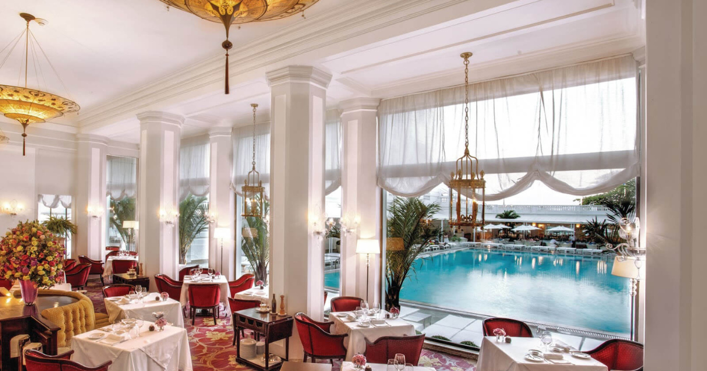

Jamile
Informações Gerais
📍R. Treze de Maio, 647 - Bela Vista, São Paulo - SP
📞Telefone: +55 112985-3005
🕒Horário de funcionamento: Segunda a Domingo das 12:00 ás 23:00 horas.
Sobre
O Restaurante Jamile, localizado em São Paulo, é conhecido por sua cozinha contemporânea e pratos autorais que combinam ingredientes frescos e técnicas inovadoras. Com um ambiente sofisticado e acolhedor, oferece uma experiência gastronômica única, destacando a culinária brasileira com um toque moderno. Ideal para quem busca um jantar especial, o Jamile é um excelente destino para saborear pratos refinados e de alta qualidade em um local agradável e bem localizado.
Comentários (6.751 avaliações)
Pedro Moura ★★★★★
O Restaurante Jamile oferece uma experiência gastronômica incrível, com pratos saborosos e criativos, além de um ambiente sofisticado e acolhedor. O atendimento é impecável, tornando a refeição ainda mais especial. Uma experiência realmente memorável!
Gostou? Deixe sua avaliação!